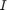
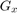
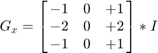
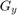
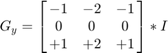
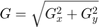
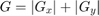
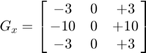
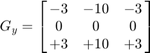
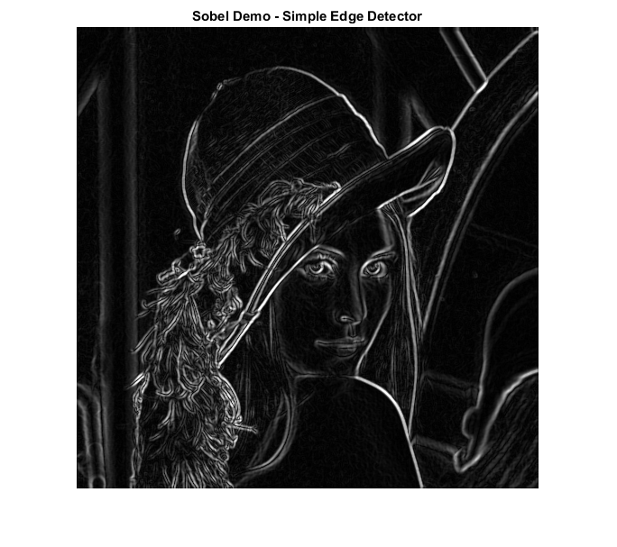

Sobel Derivatives
In this demo, we show how to:
- Use the OpenCV function cv.Sobel to calculate the derivatives of an image
- Use the OpenCV function cv.Scharr to calculate a more accurate derivative for a kernel of size 3x3
Sources:
Contents
Theory
NOTE: The explanation below belongs to the book Learning OpenCV by Bradski and Kaehler.
We have previously seen applicative examples of convolutions. One of the most important convolutions is the computation of derivatives in an image (or an approximation to them). Why may be important the calculus of the derivatives in an image? Let's imagine we want to detect the edges present in the image. For instance:

You can easily notice that in an edge, the pixel intensity changes in a notorious way. A good way to express changes is by using derivatives. A high change in gradient indicates a major change in the image.
To be more graphical, let's assume we have a 1D-image. An edge is shown by the "jump" in intensity in the plot below:

The edge "jump" can be seen more easily if we take the first derivative (actually, here appears as a maximum)

So, from the explanation above, we can deduce that a method to detect edges in an image can be performed by locating pixel locations where the gradient is higher than its neighbors (or to generalize, higher than a threshold).
Sobel Operator
The Sobel Operator is a discrete differentiation operator. It computes an approximation of the gradient of an image intensity function. The Sobel Operator combines Gaussian smoothing and differentiation.
Assuming that the image to be operated is , we calculate two derivatives:
- Horizontal changes: This is computed by convolving with a kernel  with odd size. For example for a kernel size of 3, would be computed as:

- Vertical changes: This is computed by convolving with a kernel  with odd size. For example for a kernel size of 3, would be computed as:

At each point of the image we calculate an approximation of the gradient in that point by combining both results above:

Although sometimes the following simpler equation is used:

Note: When the size of the kernel is 3, the Sobel kernel shown above may produce noticeable inaccuracies (after all, Sobel is only an approximation of the derivative). OpenCV addresses this inaccuracy for kernels of size 3 by using the cv.Scharr function. This is as fast but more accurate than the standar Sobel function. It implements the following kernels:


Note: You can check out more information of this function in the OpenCV reference (cv.Scharr). Also, in the sample code below, you will notice that above the code for cv.Sobel function there is also code for the cv.Scharr function commented. Enabling it should give you an idea of how this function works.
Code
The program below applies the Sobel Operator and generates as output an image with the detected edges bright on a darker background.
load source image
src = cv.imread(fullfile(mexopencv.root(),'test','lena.jpg'), 'Color',true);
apply a Gaussian blur to reduce the noise
src = cv.GaussianBlur(src, 'KSize',[3 3]);convert filtered image to grayscale
gray = cv.cvtColor(src, 'RGB2GRAY');calculate the derivatives in x and y directions (input is 8-bit, we set the output image depth to 16-bit to avoid overflow)
if true gradx = cv.Sobel(gray, 'XOrder',1, 'YOrder',0, 'DDepth','int16'); grady = cv.Sobel(gray, 'XOrder',0, 'YOrder',1, 'DDepth','int16'); else gradx = cv.Scharr(gray, 'XOrder',1, 'YOrder',0, 'DDepth','int16'); grady = cv.Scharr(gray, 'XOrder',0, 'YOrder',1, 'DDepth','int16'); end
take absolute value and convert our partial results back to 8-bit
gradxabs = cv.convertScaleAbs(gradx); gradyabs = cv.convertScaleAbs(grady);
approximate the gradient by adding both directional gradients (this is not an exact calculation, but it is good for our purposes)
grad = cv.addWeighted(gradxabs,0.5, gradyabs,0.5, 0.0);
show result
imshow(grad)
title('Sobel Demo - Simple Edge Detector')